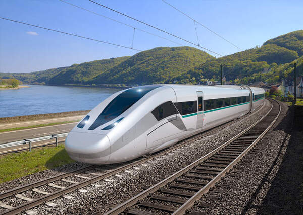
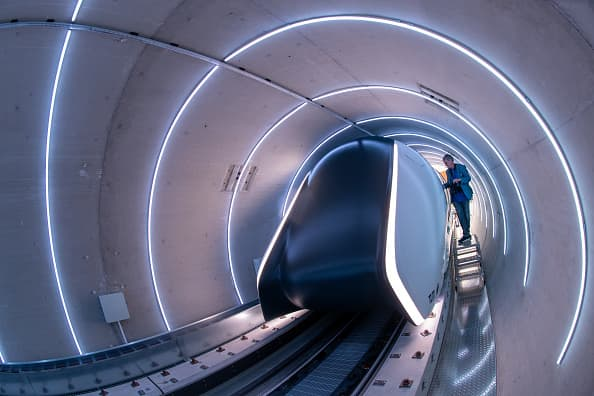
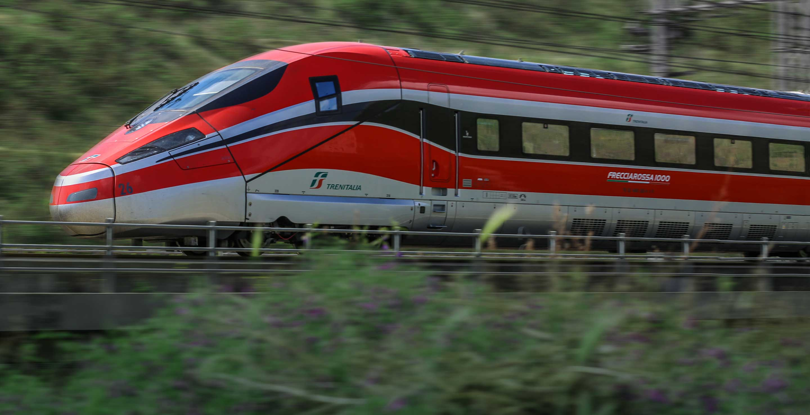
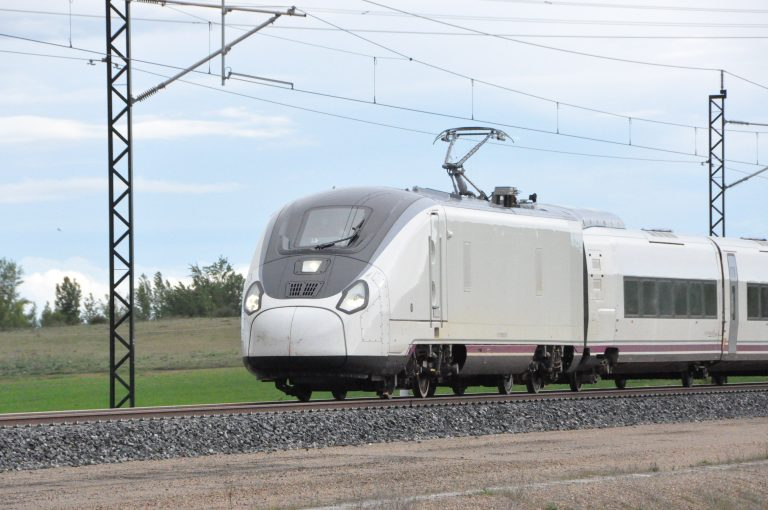

Влакове

Shinkansen N700S
Shinkansen N700S е последната версия на японската високоскоростна железопътна система Shinkansen.
Повече информация

Siemens Velaro Novo
Siemens Velaro Novo е последно поколение високоскоростен влак, проектиран от Siemens Mobility.
Повече информация
Alstom Avelia Horizon
Alstom Avelia Horizon е нова платформа за високоскоростни влакове, разработена от Alstom, известна с иновациите си в железопътната индустрия.
Повече информация

Hyperloop
Hyperloop е концепция за високоскоростен транспорт, която използва магнитна левитация и вакуумни тунели.
Повече информация

Frecciarossa 1000
Frecciarossa 1000 е италиански високоскоростен влак, създаден от AnsaldoBreda (сега част от Hitachi Rail) и Bombardier.
Повече информация

Talgo Avril
Talgo Avril е нова платформа за високоскоростни влакове, разработена от испанската компания Talgo.
Повече информация